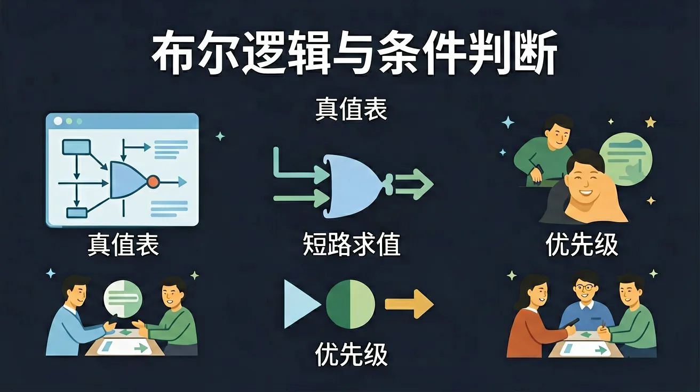

你会写 int、String 变量和算术运算 · 但程序要做决策——怎么让它[判断]？ · 布尔值（true/false）+ 逻辑运算符（&&、||、!）= 程序决策的基础
你已经学过变量与表达式，具备继续探索的底座；在日常生活中，你也早就接触过与「布尔逻辑与条件判断」相关的现象。
但当问题换了一个情境出现——需要你解释原因、做出判断或解决实际任务时，仅凭零散的旧知识就很容易卡住。
所以本课用一个贯穿的情境任务，带你把「布尔逻辑与条件判断」拆成可操作的步骤：先看懂它，再动手试，最后用练习和迁移把它变成自己的能力。
说出 &&、||、! 的含义和真值表
写出包含 if-else 的条件判断代码
使用 De Morgan 定律化简复合条件
true && false 的结果是？
已知：你会写 int、String 变量和算术运算
问题：但程序要做决策——怎么让它[判断]？
解法：布尔值（true/false）+ 逻辑运算符（&&、||、!）= 程序决策的基础
👀 看见它：在生活的真实场景里，「布尔逻辑与条件判断」长什么样？先找到一两个能摸得着的例子。
🧩 拆开它：它由哪几个关键部分组成？每个部分起什么作用、背后的原理是什么？
🚀 迁移它：换一个情境，这个结论还成立吗？试着解释一个课本之外的新例子。
类比记忆：把「布尔逻辑与条件判断」想象成你熟悉的一件东西或一个场景——就像给新知识找一个老朋友。写下你的类比，交给 AI 学伴帮你检查贴不贴切。
口诀挑战：试着把本课最容易忘的三个要点缩成一句不超过 15 字的口诀，顺口、好记、不漏关键条件。
把你对「布尔逻辑与条件判断」的理解画下来：标注关键词、画出结构关系，再对照讲解检查。
!(true || false) 的结果是？
有疑问？点击提问！
布尔逻辑是一种基于真（True）和假（False）的逻辑系统，广泛应用于计算机科学和电子工程中。布尔逻辑的核心是布尔值，即真和假。例如，在编程中，条件判断语句 if (x > 10) 中的 x > 10 就是一个布尔表达式，其结果为真或假。布尔逻辑还涉及逻辑运算符，如与（AND）、或（OR）、非（NOT）等。这些运算符用于组合多个布尔表达式，形成更复杂的逻辑判断。例如，在电子电路中，布尔逻辑用于设计逻辑门电路，实现复杂的逻辑功能。
逻辑运算符 AND（与）用于判断多个条件是否同时为真。只有当所有条件都为真时，AND 运算的结果才为真。例如，在编程中，表达式 if (x > 10 AND y < 20) 表示只有当 x 大于 10 且 y 小于 20 时，条件才成立。在生活中，AND 运算也有广泛的应用。例如，申请信用卡时，银行通常要求申请人同时满足年龄大于 18 岁和收入稳定这两个条件，这实际上就是一个 AND 运算。在电子电路中，AND 门是实现 AND 运算的基本逻辑门，其输出只有在所有输入都为高电平时才为高电平。
布尔逻辑的强大之处在于可以将多个逻辑运算符组合使用，形成复杂的逻辑判断。例如，在编程中，表达式 if ((x > 10 AND y < 20) OR z == 0) 表示当 x 大于 10 且 y 小于 20，或者 z 等于 0 时，条件成立。在生活中，布尔逻辑的组合使用也有广泛的应用。例如，企业在招聘时，通常会要求应聘者同时满足学历和工作经验的要求，或者有特殊技能，这实际上就是一个布尔逻辑的组合使用。在电子电路中，组合逻辑电路可以实现复杂的逻辑功能，如加法器、比较器等。
真值表是布尔逻辑中用于表示逻辑运算结果的一种表格形式。真值表列出了所有可能的输入组合及其对应的输出结果。例如，对于 AND 运算，真值表列出了两个输入的所有四种组合及其输出结果。真值表在逻辑设计和调试中非常有用，可以帮助设计者验证逻辑运算的正确性。在编程中，真值表也可以用于理解和调试复杂的条件判断语句。例如，表达式 if ((x > 10 AND y < 20) OR z == 0) 的真值表可以帮助程序员理解在不同输入条件下程序的执行路径。
布尔逻辑在编程中广泛应用于条件判断和循环控制。例如，在 Python 中，if 语句和 while 循环都依赖于布尔表达式的结果。条件判断语句 if (x > 10) 中的 x > 10 就是一个布尔表达式，其结果为真或假。循环控制语句 while (x < 100) 中的 x < 100 也是一个布尔表达式，只有当其结果为真时，循环才会继续执行。布尔逻辑还用于实现复杂的控制流程，如嵌套的条件判断和循环。例如，在游戏开发中，布尔逻辑用于判断玩家的输入是否有效，以及游戏状态是否需要进行更新。
先独立作答，再点选项查看对错与错因。
在编程中，以下哪个逻辑运算符表示'逻辑与'？
若x=True，y=False，则 not(x or y) 的结果是：
以下哪个真值表对应'异或'逻辑？
在Python中，判断变量a是否不等于5的表达式应写作____。
答案：a != 5
!=是不等于运算符
将'如果成绩≥60则通过'转换为布尔表达式：____。
答案：score >= 60
关系运算符>=表示大于等于
关于德摩根定律，正确的是：
设计一个简化路口信号灯控制系统，要求： 1. 主路绿灯时支路必须红灯 2. 紧急车辆通过时全红 3. 夜间模式黄灯闪烁